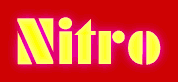

Drink different

Willkommen bei Randvoll! Unsere Gläser sind gefüllt - wie sieht's mit deinem aus?
Wir sind eine kleine Getränkefirma aus Zürich, und unser Ziel ist es, dir genau die Getränke zu liefern, die du brauchst.
Produziert ist alles von Hand mit lokalen Zutaten und wir sind Teil von der Made in Zürich Initiative.
Für Fragen kannst du uns gerne kontaktieren. Via Mail oder so.
Bis bald!

NITROMOST
DER Süssmost mit Schuss. Unser aktuelles Getränk, alle Infos unter www.nitromost.ch.